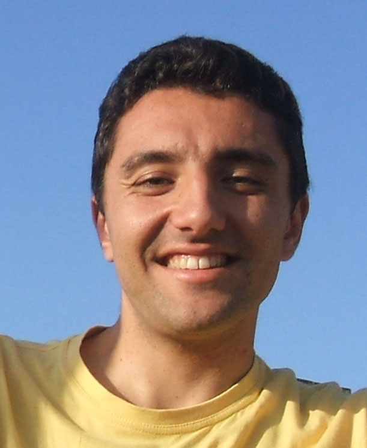
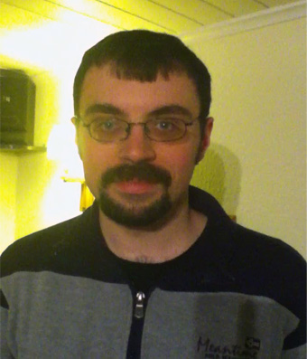
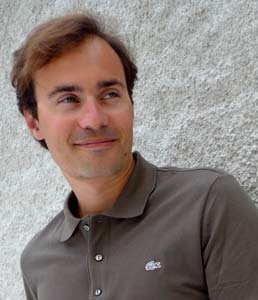
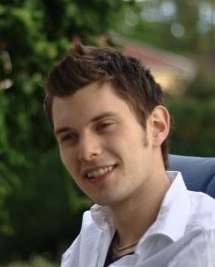

Kostis Sagonas Leader of the HiPE team and Erlang tool developer | Mike Williams Co-inventor of Erlang |  James Aimonetti VoIP Erlangineer | Jesper Louis Andersen Creator of the eTorrent project |  Thomas Arts Professor and co-founder of QuviQ AB |
 Ian Barber Development Manager at Virgin, queuing enthusiast |  Jonas Bonér akka creator, co-founder of Type Safe and Erlang fan | Jon Brisbin RabbitMQ and Riak Commiter |  Francesco Cesarini Founder of Erlang Solutions and co-author of Erlang Programming |  Eric Cestari Project Manager at ProcessOne |
 Benoît Chesneau Web Craftsman |  Christian Colombo Creator of the monitoring tool Larva | David Craelius CTO of Klarna |  David Dawson Head of Technology at Mobile Interactive Group |  Malcolm Dowse Erlang and FP enthusiast |
 Alexandre Eisenchteter COO @af83 and U.C.Engine project lead | Darach Ennis Principal Systems Engineer at StreamBase Systems, Inc. | Tony Falco COO of Basho Technologies |  Scott Lystig Fritchie Decade-long Erlang addict | Fred Hebert Learn You Some Erlang for great good Fred! |
Orion Henry Founder of Heroku |  John Hughes Inventor of QuickCheck and Erlanger of the year | Bob Ippolito CTO and co-founder of Mochi Media | Marcus Kern Integrated mobile and digital communications |  Huiqing Li Inventor of Wrangler |
 Adam Lindberg Author of the open source mocking library meck |  Kenneth Lundin Manager of the Erlang/OTP dev team at Ericsson | Jon Meredith QuickCheck Guru in an NoSQL World |  Eric Merritt Erlang author and Erlware Committer | Hunter Morris CTO and co-founder of Smarkets |
 Paolo Negri Opensource enthusiast, developer at wooga |  Knut Nesheim Developer at wooga | Benjamin Nortier Polyglot Programmer |  Jan Henry Nystrom Call me Henry | Ori Pekelman CTO of af83 |
 Michal Ptaszek ejabberd employer and deployer |  Yurii Rashkovskii Maintainer of erlagner.org | Matthew Sackman Writer of the first prototypes of RabbitMQ |  Michal Slaski Senior Erlang consultant and software architect | Pero Subasic Chief Architect of R&D at AOL |
 Simon Thompson Creator of Wrangler and co-author of Erlang Programming |  Kresten Krab Thorup Creator of Erjang | Javier M. Torres Systems Engineer and part-time neuroscientist @ Ericsson |  Alvaro Videla Co-author of the RabittMQ Manning book | Steve Vinoski Yaws committer, REST advocate, and distributed systems expert |
 Robert Virding Co-Inventor of Erlang and Erlang Solutions Principal Language Expert | Jacob Vorreuter Primary developer of Heroku's Erlang cloud | Jon Watte Technical Director, IMVU Inc |  Ulf Wiger Uber Erlang programmer and CTO of Erlang Solutions |  Dominic Williams An Agile voice in the Erlang world |
 Holger Winkelmann Telecoms and AAA Expert |